Swarmの利用法を学ぶためのチュートリアルが用意されている。しかしこのチュートリアルはObjective-Cで書かれているため、Javaに翻訳したものをここに掲載する。順番に見ていけばSwarmの利用法がわかるだろう。
1匹のbugが歩き回る。
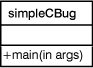
main methodを持つクラスがあるだけである。
$ gcjswarm simpleCBug.java でビルド $ ./simpleCBug で実行
gcjswarmについてはインストール方法を参照。
1匹のbug（オブジェクト）が歩き回る。
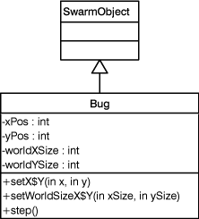
simpleObjCBugがオブジェクトBugを生成する。BugはSwarmの基本的なオブジェクト（SwarmObjectImpl）である。Bugの各メソッドは自分自身(this)を返すが、この記述は以後省略する。
1匹のbug（オブジェクト）が歩き回る。
餌がfoodSpace（オブジェクト）にある。
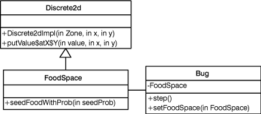
Bugは餌がまかれた空間FoodSpaceの中を歩き回る。FoodSpaceはSwarmライブラリが提供する格子Discrete2dImplである。
modelSwarm（オブジェクト）がfoodSpaceとbugを作る。
1匹のbugが歩き回る。
BugとFoodSpaceはsimpleObjCBug2と同様である。
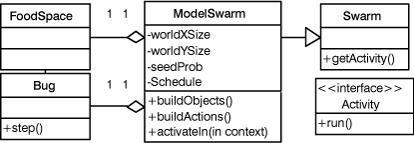
厳密にはrun()はModelSwarmのメソッドではない。
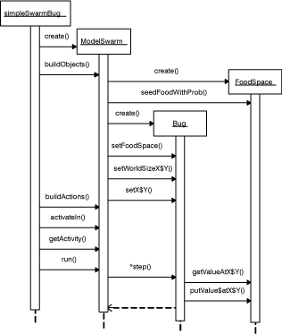
modelSwarmがfoodSpaceとbugs、world（オブジェクト）を作る。
複数匹のbugsがworldの中を歩き回る。
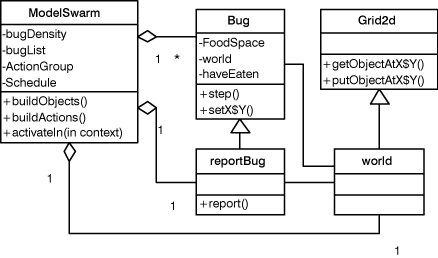
コレクション・ライブラリ（List）を用いて、複数のBugを扱えるようにする。ただし、そのうちの1匹はreportBugとし、餌を見つけた場合にそのことを報告するようにする（図ではBugの継承のように描いているが実装はそうではない）。
BugたちはGrid2dImplを継承したworldの中に自分への参照を置き、ランダム・ウォークの際には、他のBugがいないことを確認してから移動する。
ファイルbug.scmからパラメータを読み取り、modelSwarmを作る。
modelSwarmがfoodSpaceとbugsとworldを作る。
複数匹のbugsがworldの中を歩き回る。
simpleSwarmBug3のメソッドmainで次のように書けば、ModelSwarmのインスタンスが生成される。
modelSwarm = (ModelSwarm)Globals.env.lispAppArchiver.getWithZone$key(Globals.env.globalZone,"modelSwarm");
パラメータ・ファイルの内容は次のようなLispのS式である。
(list
(cons 'modelSwarm
(make-instance 'ModelSwarm
#:worldXSize 80
#:worldYSize 80
#:seedProb 0.9
#:bugDensity 0.01)))
lispAppArchiverで設定できるフィールドは、publicなものに限られることに注意。よって、ModelSwarmは修正が必要である。他に必要な修正は、simpleSwarmBug3に、lispArchiverの呼び出しを加えることだけである。
observerSwarm（オブジェクト）がbug.scmからパラメータを読み取り、worldRaster（worldとfoodSpaceを表示するためのオブジェクト）とmodelSwarmを作る。
modelSwarmがfoodSpaceとbugsとworldを作る。
複数匹のbugsがworldの中を歩き回る。
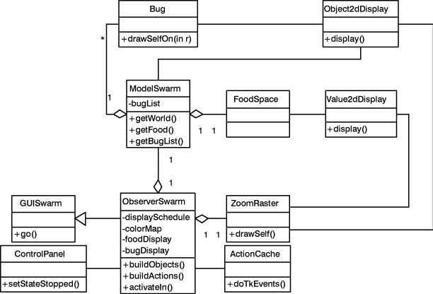
GUIとして、ControlPanelとZoomRasterが加わる。ControlPanelはシミュレーションの開始や停止のためのボタンを提供し、ZoomRasterはFoodSpaceおよびBugたちの様子を視覚化する。
FoodSpaceを画面に表示するためには、ZoomRasterとFoodSpaceの間にValue2dDisplayを介在させればよい。同様に、bugListの表示のためには、Object2dDisplayを用いる。
obserSwarmがbug.scmからパラメータを読み取り、worldRasterとmodelSwarm、メンバのためのprobeMap（オブジェクト）を作る。
modelSwarmはfoodSpaceとbugs、world、probeMapを作る。
複数匹のbugsがworldの中を歩き回る。
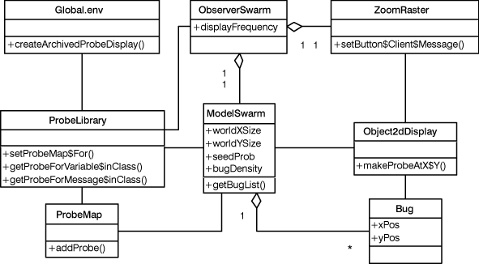
Probeによって、ユーザーはリアルタイムにシミュレーターを操作することができる。ここでは、ModelSwarmとObserverSwarmのためのProbeを生成している。よって、起動時に現れるProbeは次の2つである。
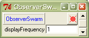
ObserverSwarmのProbeはデフォルトのProbeで、publicなフィールド（displayFrequencyのみ）を表示している。デフォルトのProbeのため、Globals.env.createArchivedProbeDisplayだけで作成することができる。
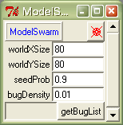
ModelSwarmのProbeはカスタマイズしてあり、publicなメソッドgetBuglistも呼び出せるようになっている（クリックで呼び出せるが、この場合参照が返るだけである）。
カスタマイズするには、ProbeMapに欲しい要素を登録し（addProbe）、そのProbeMapをProbeLibraryに登録すればよい（setProbeMap$For）。この例では次の手順でModelSwarmのためのProbeを作成している。
フィールドの値を変えるためには、新しい数値を入力して、Enterキーを押す。たとえば、worldXSizeを200worldYSizeを20にしてからStartボタンを押すと、シミュレーションは次のようになる。
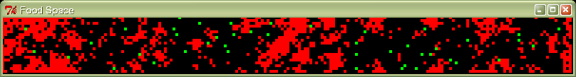
FoodSpace上のBugをクリックすることで、次のようにそのBugのProbeを生成できる（これまでxPos,yPosはprivateだったが、ここではProbeで操作できるようにpublicにしている）。
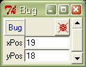
これは、ZoomRasterのsetButton$Client$Messageによって、右クリックするとObject2dDisplayのmakeProbeAtX$Yが呼ばれるように設定されているからである。
Probeにある青字のクラス名を右クリックすると、publicなフィールドとメソッドをすべて表示させることができる。たとえば、Bugを右クリックすると、次のようになる。
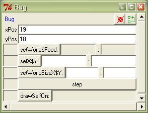
さらに、右上にあるをクリックすると、スーパークラスのProbeが生成される。
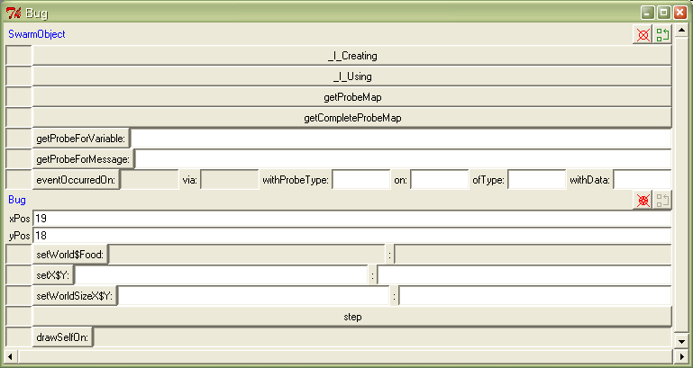
オブジェクトexperSwarmが、bug.comからparameterManager（オブジェクト）、resultGraph（グラフ表示のためのオブジェクト）、複数のmodelSwarms、modelSwarmのためのprobeMapを作る。
modelSwarmはfoodSpaceとbugs、worldを作る。
複数匹のbugsがworldの中を歩き回る。
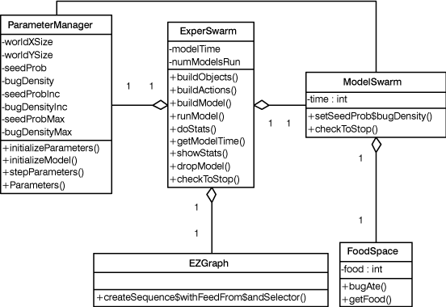
ここではランダム・ウォークするBugたちによってFoodSpaceが食べ尽くされるまでの時間を調べている。Bugは餌を見つけるとFoodSpaceのメソッドbugAteを呼ぶ。bugAteが餌の数foodをデクリメントすることによって、餌の数を把握することができる。
ModelSwarmはFoodSpaceの餌の数を調べ、0になったらシミュレーションを終了する。
ExperSwarmはModelSwarmを監視し、シミュレーションが終わったら、新しいモデルを生成する。モデルのパラメータはParameterManagerによって設定する。
餌が食べ尽くされるまでの時間はモデルのパラメータによって変わるが、その変化の様子をグラフで視覚化する。
（プログラムのシーケンスは、ExperSwarmとModelSwarmのスケジュール（ActionGroupが一つ登録されている）をみればわかる。）